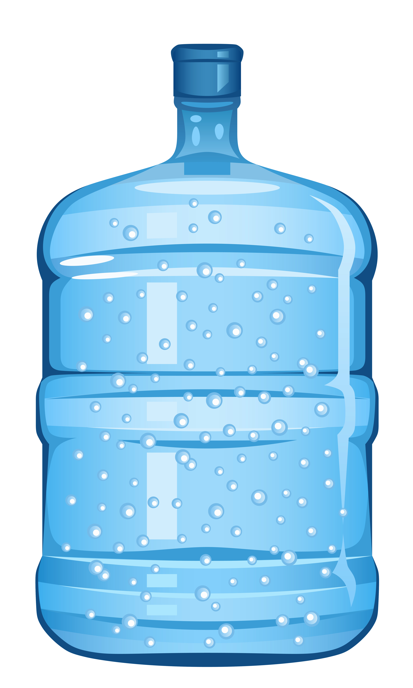

Cristalina
A água Mineral Natural Cristalina do Monte está presente no mercado desde 1994, com destaque na sua composição, rica em minerais, devido a presença de elementos essenciais a nossa saúde como: o flúor, o cálcio, o potássio, o magnésio, o bicarbonato e o lítio.
O processo de produção é fiscalizado pela ANVISA (Agência Nacional de Vigilância Sanitária) e pelo DNPM (Departamento Nacional de Produção Mineral). Além disso, a empresa possuí laboratório próprio para diariamente a engenheira química fazer análise da água. A cada período de 30 dias são encaminhadas amostras ao laboratório biológico de Florianópolis, credenciado ao DNPM, para garantir ao consumidor um excelente padrão de qualidade.
A empresa possuí equipamentos modernos para que o envaze conserve propriedades naturais da água. Após este processo, os produtos embalados são mantidos em depósitos adequados. Além disso, a Água Mineral Cristalina do Monte tem responsabilidade ambiental, preservando o meio ambiente e a cultura para gerações futuras.
O que o Disk Água faz por você
- Entrega em domicilio.
- Retirada no local até as 20h.
- Aceita cartão, pix e dinheiro.